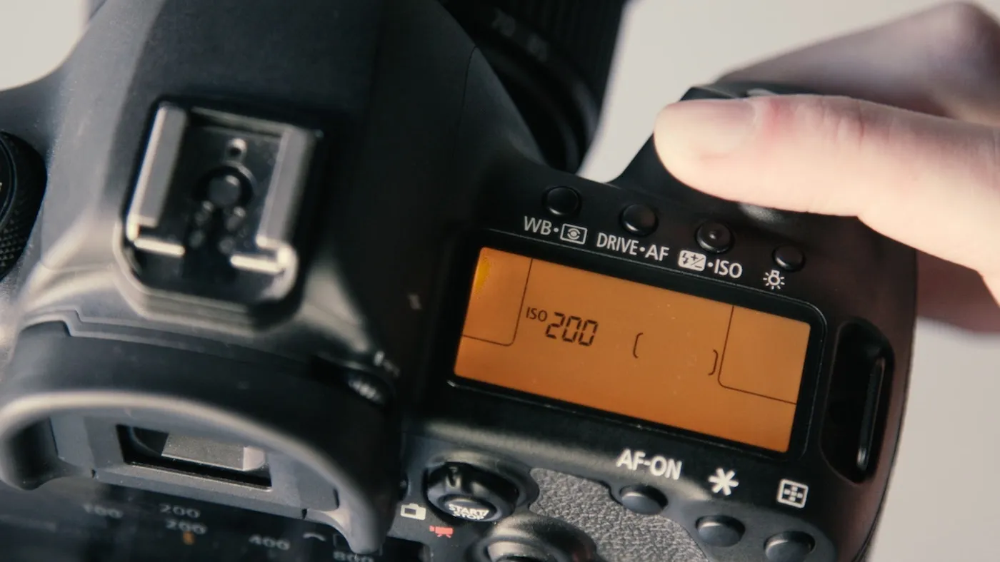
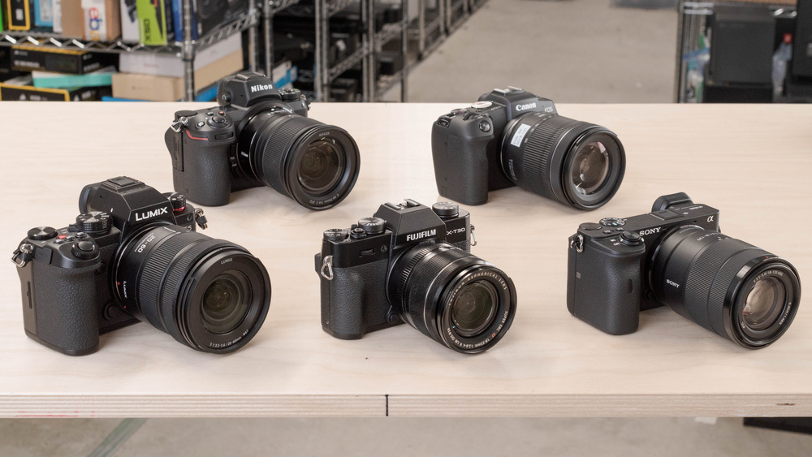

Introduction to Photography:A Universal Language
This introduction to photography is written for beginners, with several tips and suggestions to take your skills as far as possible. However, writing an introduction to photography is like writing an introduction to words; as amazing and important as it is, photography can be almost limitlessly complex. What separates inspiring photographs from ordinary ones, and how can you improve the quality of your own work?
What is Photography?
Photography is the art of capturing light with a camera, usually via a digital sensor or film, to create an image. With the right camera equipment, you can even photograph wavelengths of light invisible to the human eye, including UV, infrared, and radio. The first permanent photograph was captured in 1826 (some sources say 1827) by Joseph Nicéphore Niépce in France.
Do you need a Fancy Camera?
Many people today believe that their phone is good enough for most photography, and they have no need to buy a separate camera. And you know what? They’re not wrong. For most people out there, a dedicated camera is overkill.
Phones are better than dedicated cameras for most people’s needs. They’re quicker and easier to use, not to mention their seamless integration with social media. It only makes sense to get a dedicated camera if your phone isn’t good enough for the photos you want (like photographing sports or low-light environments) or if you’re specifically interested in photography as a hobby.
That advice may sound crazy coming from a photographer, but it’s true. If you have any camera at all , especially a cell phone camera, you have what you need for photography. And if you have a more advanced camera, like a DSLR or mirrorless camera, what more is there to say? Your tools are up to the challenge. All that’s left is to learn how to use them.
What is the Bare Minimum Gear needed for Photography?
Camera: If you buy a dedicated camera (rather than a phone), pick one with interchangeable lenses so that you can try out different types of photography more easily.

Lenses:This is where it counts. For everyday photography, start with a standard zoom lens like a 24-70mm or 18-55mm. For portrait photography, pick a prime lens (one that doesn’t zoom) at 35mm, 50mm, or 85mm. For sports, go with a telephoto lens. For macro photography, get a dedicated macro lens. And so on. Lenses matter more than any other piece of equipment because they determine what photos you can take in the first place.
Post-Processing Software:One way or another, you need to edit your photos. The software that comes with your computer probably won’t cut it in the long run. But at the end of the day, Photoshop and Lightroom are still the standards for photo editing. An open-source Lightroom alternative called Darktable is an option if you’re on a budget.
There are other things that might be optional, but can be very helpful:
- Tripod:A landscape photographer's best friend.
- Bags:Get a shoulder bag for street photography, a rolling bag for studio photography, a technical hiking backpack for landscape photography, and so on.
- Memory Cards:Well, these aren’t optional. Choose something in the 64-128 GB range to start. Get a fast card (measured in MB/second) if you shoot bursts of photos, since your camera’s memory will clear faster.
- Cleaning Kits:The top item is a microfiber cloth to keep the front of your lens clean. Also get a rocket blower to remove dust from your camera sensor easily and safely.
- Other Equipment:There are countless photography accessories available, from remote shutter releases to GPS attachments, printers, and more. Don’t worry about these at first; you’ll realize over time if you need any of them. Instead, go out and start taking pictures first!
The Three Fundamental Camera Settings You Should Know
The three most important settings are called shutter speed, aperture, and ISO. All three of them control the brightness of your photo, although they do so in different ways. In other words, each brings its own “side effects” to an image. So, it’s a bit of an art to know exactly how to balance all three for a given photo.
- Shutter Speed:The amount of time your camera sensor is exposed to the outside world while taking a picture. To know more on shutter speed Click here.
- Aperture:Represents a “pupil” in your lens that can open and close to let in different amounts of light. To know more on aperture Click here.
- ISO:Technically a bit more complex behind the scenes, but similar to the sensitivity of film for taking pictures in different lighting conditions. Also similar to brightening or darkening a photo in post-processing. To know more on ISO visit Click here. 
Photography Tips For Beginners
Work with Your Composition
To take engaging photos, you need to be engaged with what you’re doing. Don’t just fly by on autopilot. Instead, put thought into your composition and try to make your photos as good as possible.

That starts with knowing the basics of how to compose good photos. Don’t cut off important parts of your subject with the edge of your frame. Keep your horizons level, and try to eliminate any distractions in your photo by adjusting your composition. See if your photo has a sense of balance and simplicity.
Use the Camera You Already Have
Camera gear is not all that important. There are countless cameras, lenses, and other accessories on the market today. We spend a lot of time reviewing them at Photography Life, and it’s true that some are better than others (or better suited for a given job). But once you’ve tested enough of them, the real takeaway is that pretty much everything today is excellent. The differences are almost always minor, especially at a given price. So, use the camera you already have, and don’t look back. In almost every way, today’s entry-level mirrorless cameras are better than the top-of-the-line film SLRs or even the DSLRs of ten years ago. Yet, somehow those film photographers managed to capture beautiful, iconic photos that still look great today. Much more important are your creative skills and knowledge of camera settings. Focus your effort on those, not on collecting camera equipment.
Learn Which Settings Matter
There are a lot of camera settings, and it takes some practice to get them right, especially as a beginner. Even advanced photographers won’t always do everything perfectly. But it’s worth learning how to set your camera properly, and which camera settings matter the most, so you have the best chance to take the photos you want.

First, try practicing with camera modes other than full Auto. You won’t learn anything if your camera is making all the decisions for you. It might be confusing at first, but hopefully our articles on aperture, shutter speed, and ISO will give you a good head start. Those are the three most important settings in all of photography.
Don't Overexpose Highlights
When you are picking your camera settings, it is critical to avoid overexposing highlights in a photo. The reason? It’s simply impossible to recover any detail from white areas of a photo. Personally, I prefer the sky in my photos to have nice texture and color, rather than being just a big, featureless blob, and I bet you do too.

It’s pretty easy to keep your highlights intact. But this is where shutter speed, aperture, and ISO are so important. These are the only camera settings that directly affect the brightness of a photo (ignoring flash settings, of course). Even exposure compensation – an important setting itself – just tells your camera to change one or more of these three variables.
Pay Attention to the Light
Probably the single most important part of photography is light. If you take a photo with good light, you’ve taken a huge step toward getting a good picture. But what counts as good light? It’s not all about sunsets.
Often, the goal here is to balance the light’s intensity between your subject and background. Even if you’re photographing an amazing sunset, the photo could be ruined by a completely dark and silhouetted foreground.
Take Your Time
It’s easy to make mistakes in photography if you aren’t careful. The best way around this is to slow down and take your time whenever possible, particularly when you are first beginning to learn photography.
First, double-check your camera settings. If you’re shooting outdoor portraits on a sunny day, but you’re using last night’s settings for photographing the Milky Way, something is terribly wrong. Slow down and take the time to get it right.Then, keep the same mindset for every other important decision. Is your composition as good as possible? Did you autofocus in the right place? Have you done everything possible to improve the lighting conditions?
And don’t listen to people who tell you to avoid reviewing photos in the field. Sure, it’s a bad idea to review photos when something amazing is happening in front of you, but you’ll almost always have some downtime between shots.
Inspiration
Featured Photos by Our Users